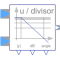

BodeCalculate quantities to plot Bode diagram |

|
Diagram
{kind=link}
Information
This information is part of the Modelica Standard Library maintained by the Modelica Association.
This complex block is used to determine variables of a Bode diagram for the output y.
The output y is calculated by u / divisor if useDivisor == true.
Otherwise the output y = u.
abs_yAbsolute value ofyarg_yAngle ofydB_yLogarithm to the base 10 of the absolute value ofyin dB
Parameters (1)
| useDivisor |
Value: true Type: Boolean Description: Use divisor input, if true |
|---|
Connectors (6)
| u |
Type: ComplexInput Description: Dividend if useDivisor == true |
|
|---|---|---|
| divisor |
Type: ComplexInput Description: Divisor |
|
| abs_y |
Type: RealOutput Description: Absolute value of ratio u / divisor |
|
| arg_y |
Type: RealOutput Description: Angle of ratio u / divisor |
|
| y |
Type: ComplexOutput Description: Quotient y = u / divisor |
|
| dB_y |
Type: RealOutput Description: Log10 of absolute value of ratio u / divisor in dB |
Components (6)
| complexOne |
Type: ComplexConstant Description: Complex(1,0) |
|
|---|---|---|
| division |
Type: Division |
|
| complexToPolar |
Type: ComplexToPolar |
|
| log10_y |
Type: Log10 |
|
| gain |
Type: Gain |
|
| limiter |
Type: Limiter |
Used in Examples (1)
|
Modelica.Electrical.QuasiStationary.SinglePhase.Examples Series circuit with Bode analysis |